Sesión 5
Curso: R Aplicado a los Proyectos de Investigación
Percy Soto-Becerra, M.D., M.Sc(c)
InkaStats Data Science Solutions | Medical Branch
2022-10-12

Medidas de resumen para variables numéricas
Agenda
Medidas de resumen para variables numéricas
Análisis descriptivo de variables categóricas
Medidas de resumen de variables categóricas con R
Tablas Reproducible
tbl_summary() paso a paso
Análisis descriptivo de variable numérica
- Medias de tendencia central
- Media
- Mediana (es también
medida de posición) - Moda (no es usual)
- Medidas de posición
- Cuantiles (en general)
- Mediana = percentil 50 (es también medida de
tendencia central) - Percentil 25 (p25)
- Percentil 75 (p75)
- Medidas de dispersión
- Rango (máximo - mínimo)
- Varianza / Desviación estándar
- Rango intercuartílico (p75 - p25)
- De acuerdo a moda:
- Unimodal (una sola moda)
- Multimodal (p. ej, bimodal)
- Uniforme (no moda)
- De acuerdo a simetría
- Simétrica
- Asimétrica (o ‘sesgada’)
- Positiva (A la derecha)
- Negativa (A la izquierda)
- De acuerdo a curtosis:
- Leptocúrtica
- Mesocúrtica
- Platicúrtica
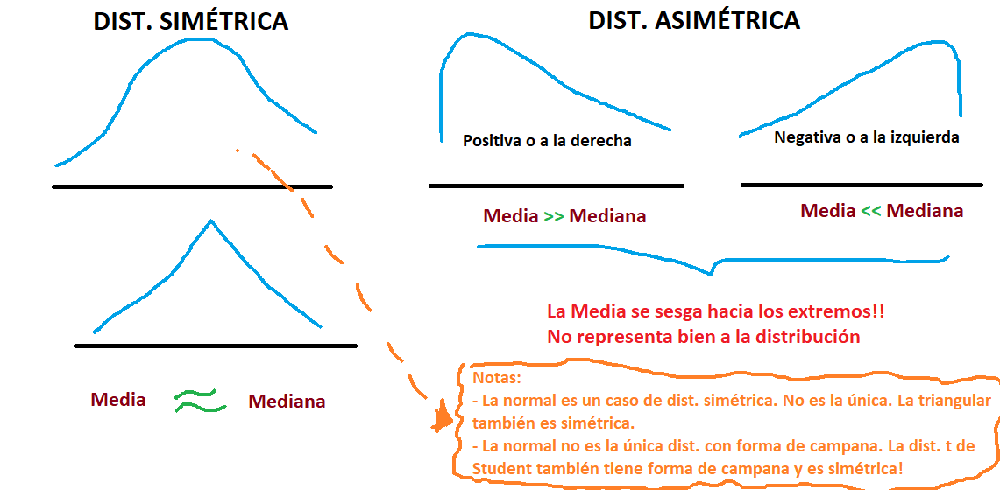
Medidas de resumen
Para una variable de interés \(X\), se tiene la muestra conformada por \(n\) elementos \(x_1, x_2, x_3, ..., x_n\) entonces podemos resumir esta muestra de valores mediante los siguientes estadísticos:
Media aritmética: \(\bar{x}\)
Media geométrica: \(\bar{x}_g\)
Otras medias: truncada y armónica
Mediana: \(Med(x)\)
Moda: \(Moda(x)\)
Percentiles: \(P25\) y \(P75\)
Cuartiles: \(Q1\), \(Q2\) y \(Q3\)
Varianza y desviación estándar: \(Var(x)\) y \(DE(x)\)
Rango
Rango intercuartílico: \(RIQ\)
Coeficiente de variación: \(CV\)
Medidas de resumen: Tendencia central
- La media artimética de una lista de números, es la suma de estos números dividida por la cantidad de esto y está dada por la siguiente expresión:
\[\bar{x} = \frac{x_1 + x_2 + x_3 + ... + x_n}{n} = \frac{\sum_{i = 1}^{n}x_i}{n}\]
Ejemplo
Sean las siguientes edades en años: \(36, 4, 75, 45, 50\), su media aritmética es
\[\frac{36 + 4 + 75 + 45 + 50}{5} = \frac{210}{5} = 42\]
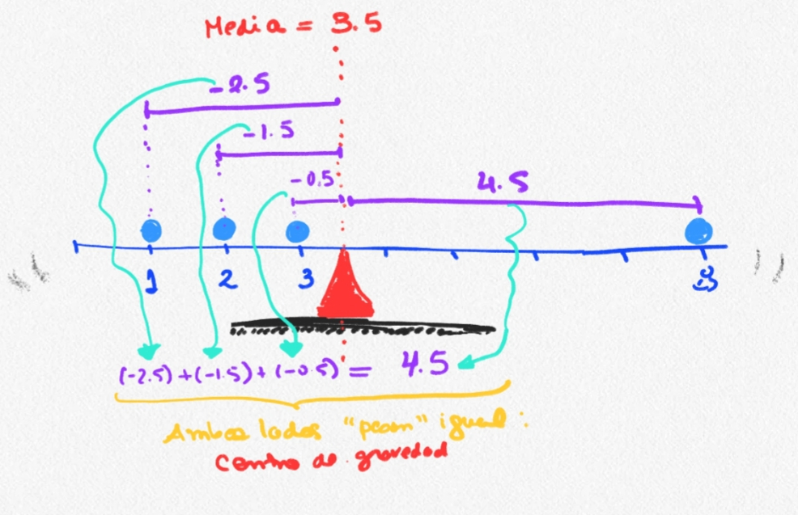
Forma de promedio útil para conjuntos de números positivos que se desean interpretar de acuerdo a su producto en vez de su suma.
Es la raíz \(n-ésima\) del producto de los números y está dada por la siguiente expresión:
\[\bar{x}_{g} = \sqrt[n]{x_1x_2x_3...x_n} = (x_1x_2x_3...x_n)^{\frac{1}{n}} = (\prod_{i = 1}^{n}x_i)^{\frac{1}{n}}\]
Ejemplo
Sean las siguientes edades en años: \(36, 4, 75, 45, 50\), su media geométrica es
\[(36 \times 4 \times 75 \times 45 \times 50) ^ {\frac{1}{5}} = \sqrt[5]{24300000} = 30\]
Media truncada
Media truncada o recortada (en inglés trimmed mean) es una medida de tendencia central similar a la media aritmética que se calcula luego de descartar las partes de ambos extremos de la distribución.
Típicamente se descartan las mismas proporcions de datos en los extremos.
En la mayoría de aplicaciones se descartan entre 5% a 25%.
En algunas regiones también la conocen como media windsoriana.
La usan mucho en eventos de competición para eliminar la influencia de las calificaciones extremas de los jueces
Media armónica
Es un tipo de medida promedio conocida por ser una de las medias pitagóricas.
Se expresa como el recíproco de las medias aritméticas de los recíprocos de un conjunto dado de observaciones.
\[H = \frac{n}{\frac{1}{x_1} + \frac{1}{x_2} + ... + \frac{1}{x_n}} = \frac{n}{\sum_{i=1}^{n}{\frac{1}{x_i}}} = (\frac{\sum_{i=1}^{n}x_i^{-1}}{n})^{-1} \] - Es más útil en situaciones donde se desea promediar tasas o estadístico similares basados en medidas de razón.
- Sean \(x_{(1)}, x_{(2)}, x_{(3)}, ..., x_{(i)},..., x_{(n)}\) estadísticos de orden, es decir cada \(x_{(i)}\) representa al \(i-ésimo\) valor más pequeño de la muestra, entonces la mediana está dada por la siguiente expresión:
\[ Med(x) = \begin{cases} x_{(n+1)/2} & \text{si n es impar} \\ \frac{x_{(n/2)}+x_{(n/2+1)}}{2} & \text{si n es par} \end{cases} \]
Ejemplo
Luego de ordenar de menor a mayor, tenemos \(4, 36, 45, 50, 75\). Como \(n = 5\) es impar, entonces
\[Med(x) = x_{(5+1)/2} = x_{(3)} = 45\]
- En otras palabras, es el valor que separa la mitad superior de la mitad inferior de una muestra de datos.
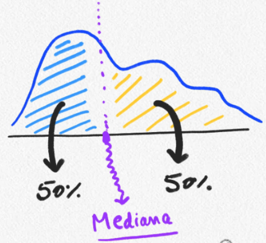
Es el valor que aparece más frecuentemente en los datos.
- De poca utilidad en variables numéricas.
No necesariamente es única.
Unimodal
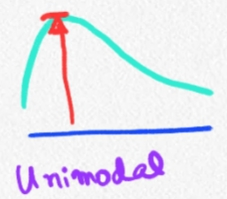
Multimodal
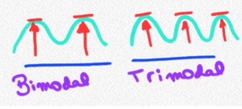
Multimodal extremo: Uniforme
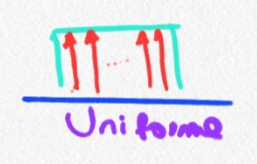
En resumen, la visualización geométrica de la media, mediana y moda para una distribución unimodal es la siguiente.
Moda:Valor más frecuente (punta más alta de distribución)Mediana:Valor que divide datos en 50% (mitad de la distribución)Media:Centro de gravedad (punto en el que los “pesos” de ambos lados se igualan)
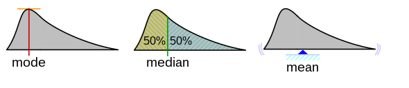
Funciones
Funciones de R base:
mean()
mean(…, trim = …)
median()
Funciones extras a R base:
- geometric.mean() de {psych}
Datos para los cálculos
- Sean el vector de edades:
- Sea el vector de hemoglobina:
Media aritmética
- En vector con datos completos:
- En vector con datos incompletos:
- Es necesario agregar na.rm = TRUE
Media geométrica
- Manualemente
- Con librería psych
Media truncada
- Solo 5% de ambas colas
Mediana
Medidas de resumen: Posición
Son los valores que funcionana como puntos de corte para dividir el rango de datos en intervalos continuos con igual frecuencia.
El \(k-ésimo\) \(q-cuantil\) es el valor de los datos donde su función de distribución acumulada cruza \(k/q\).
Es decir, \(x\) es el \(k-ésimo\) \(q-cuantil\) para una variable \(X\) si:
\[Pr[X < x] \leq k/q\]
\[Pr[X \leq x] \geq k/q \]
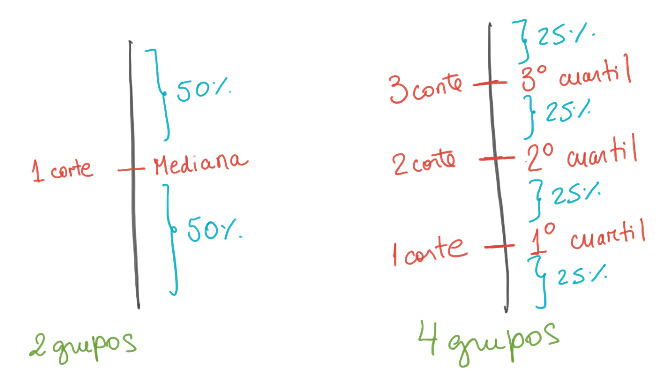
El nombre del cuantil depende de cuántos grupos se forman.
La cantidad de cuantiles es siempre 1 menos.
- Ejemplo, para formar 4 grupos, necesito solo 3 cortes: 3 cuartiles
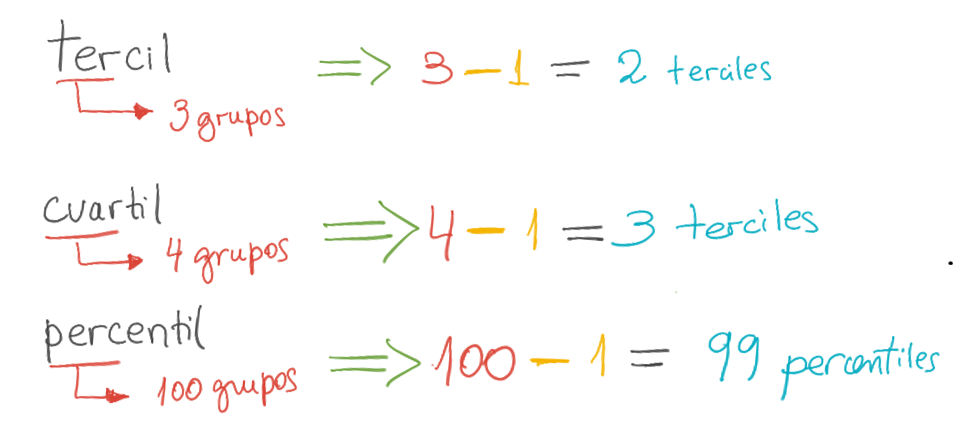
Hay una lista bastante grande de cuantiles.
Los más famosos son:
- Mediana
- Terciles
- Cuartiles
- Quintiles
- Deciles
- Percentiles.
| Q-cuantil | Nombre del cuantil | Número de grupos iguales | Número de cuantiles |
|---|---|---|---|
| 2-cuantil | Mediana | 2 | 1 |
| 3-cuantil | Terciles | 3 | 2 |
| 4-cuantil | Cuartiles | 4 | 3 |
| 5-cuantil | Quintiles | 5 | 4 |
| 6-cuantil | Sextiles | 6 | 5 |
| 7-cuantil | Septiles | 7 | 6 |
| 8-cuantil | Octiles | 8 | 7 |
| 10-cuantil | Deciles | 10 | 9 |
| 12-cuantil | Dodeciles | 12 | 11 |
| 16-cuantil | Hexadeciles | 16 | 15 |
| 20-cuantil | Ventiles | 20 | 19 |
| 100-cuantil | Percentiles | 100 | 99 |
| 1000-cuantil | Permiles o Mililes | 1000 | 999 |
Los cuartiles dividen los datos en cuatro partes iguales
- Por lo tanto, hay 3 cuartiles.
Los gráficos de cajas utilizan los cuartiles para realizar el dibujo de los elementos de la caja.
- El segundo cuartil es equivalente a la mediana porque contiene el 50% de los datos.

Los percentiles dividen los datos en 100 partes iguales
- Por lo tanto, son 99 percentiles.
Se usan para construir infinidad de estadísticos:
- Tablas de crecimiento, ranking de calificaciones, etc.
En inferencia estadística, se usan para establecer
- Nivel de confianza
- Nivel de significancia.
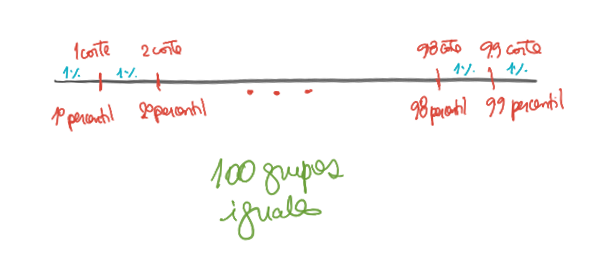
Funciones
Funciones de R base:
- quantile(…, probs = …)
Datos para los cálculos
- Sean el vector de edades:
- Sea el vector de hemoglobina:
Cuartiles
- Cuartil 1 (25%)
- Cuartil 3 (75%)
- Cuartiles 1, 2 y 3
Percentiles
- Percentil 67
- Percentiles del 1 al 99
0% 1% 2% 3% 4% 5% 6% 7% 8% 9% 10% 11% 12%
6.00 6.05 6.10 6.15 6.20 6.25 6.30 6.35 6.40 6.45 6.50 6.55 6.60
13% 14% 15% 16% 17% 18% 19% 20% 21% 22% 23% 24% 25%
6.65 6.70 6.75 6.80 6.85 6.90 6.95 7.00 7.05 7.10 7.15 7.20 7.25
26% 27% 28% 29% 30% 31% 32% 33% 34% 35% 36% 37% 38%
7.30 7.35 7.40 7.45 7.50 7.55 7.60 7.65 7.70 7.75 7.80 7.85 7.90
39% 40% 41% 42% 43% 44% 45% 46% 47% 48% 49% 50% 51%
7.95 8.00 8.05 8.10 8.15 8.20 8.25 8.30 8.35 8.40 8.45 8.50 8.55
52% 53% 54% 55% 56% 57% 58% 59% 60% 61% 62% 63% 64%
8.60 8.65 8.70 8.75 8.80 8.85 8.90 8.95 9.00 9.05 9.10 9.15 9.20
65% 66% 67% 68% 69% 70% 71% 72% 73% 74% 75% 76% 77%
9.25 9.30 9.35 9.40 9.45 9.50 9.55 9.60 9.65 9.70 9.75 9.80 9.85
78% 79% 80% 81% 82% 83% 84% 85% 86% 87% 88% 89% 90%
9.90 9.95 10.00 10.10 10.20 10.30 10.40 10.50 10.60 10.70 10.80 10.90 11.00
91% 92% 93% 94% 95% 96% 97% 98% 99%
11.10 11.20 11.30 11.40 11.50 11.60 11.70 11.80 11.90 Medidas de resumen: Dispersión
Medida de la cantidad de variación o dispersión de los datos.
- Mide dispersión según alejamiento de la media.
Es la raíz cuadrada de la varianza.
Está en las mismas unidades que la variable.
Fórmula:
Sea \(\bar{x}\) la media de los \(n\) datos \(x_1, x_2, ..., x_n\), entonces la varianza está definida por:
\[Var(x) = \frac{\sum_{i = 1}^{n}{(x_i - \bar{x})^2}}{n - 1} \] Entonces, la desviación estándar de la muestra es:
\[ DE(x) = \sqrt[]{Var(x)} \]
Es el tamaño del intervalo más pequeño que contiene a todos los datos.
Diferencia entre el valor mínimo y máximo.
Fórmula
\[ Rango = min(X) - max(X) \]
Medida de la cantidad de variación de los datos.
Es la diferencia entre los percentiles 75 y 25 de los datos.
Contiene el 50% central de los datos.
El ancho de la caja de un gráfico de cajas es el IQR.
Fórmula:
\[ RIQ = Percentil~75 - Percentil~25 \]
Manualmente
- Calculándolo manualmente
- Usando algunos atajos:
Podemos almacenar los resultados en objetos
También conocido como desviación estándar relativa.
Medida estandarizada de dispersión expresada como porcentaje.
Es la razón de la desviación estandar sobre la media y mide la extensión de la variabilidad en relación a la media
\[ CV = \frac{DE(x)}{\bar{x}} \]
Manualmente
- Directo
- Paso a paso
Media:
DE:
CV en %
Usando función
No función específica disponible.
Existe en funciones que generan varias variables de resumen.
Análisis descriptivo de variable numérica - recomendaciones
Media y mediana no son dos medidas que deban entrar en disputa.Ambas cuentan dos historias complementarias sobre el “centro” de los datos.
Ambas representan a los datos a su manera.
Piensa en lo que quieres hacer
¿Quiero describir mis datos con el “mejor representante” posible?
Recuerda el mantra:
"Media es más sensible a valores extremos". La distribución de los datos puede ayudar a elegir.Distribuciones sesgadas: La
medianaymedidas de posiciónsuelenrepresentar mejorlos datos en términosdescriptivos.Distribuciones simétricas:
Medianaymediasonbuenas, lamedia se prefierepor suspropiedades estadísticaseinterpretación intuitiva.
¿Quiero comparar medidas de tendencia central para inferir efectos?
La media es una buena candidata, sean las distribuciones sesgadas o no.
La mediana no es una mala candidata, sin embargo, sus propiedades estadísticas y menor teoría desarrollada limitan actualmente su uso.
¿Quiero usar una medida de resumen para establecer predicciones?
La media es una de las más usadas, sean las distribuciones sesgadas o no.
La mediana tiene teoría menos desarrollada, pero existen algunas aplicaciones.
¿Tenemos que elegir?
No, no tenemos que elegir!!
En ensayos clínicos es preferible
reportar ambosesmás transparentey proporcionamás información.- Si hay
limitaciones de espacioy tablas en cuerpo del artículo, se suele reportar enanexos. - Se sugiere
hacer lo mismo en estudios observacionales. - ¿Por qué no? ¡Todas las revistas permiten anexos! No hay excusas.
- Si hay
Tengo limitaciones de espacio y debo elegir una medida en la tabla principal:
Elige la opción que mejor se adecue a tu objetivo:
describir,explicar,predecir.RECUERDA:Pon en anexos las demás medidas. Es información que podría ser útil para otros fines (p. ej., para calcular tamaño de muestra, evaluar comparabilidad de poblaciones, etc.)
Si objetivo es DESCRIBIR…
Siempre reporte
máximoymínimo, preferentemente entabla principalo texto.Es mejor que rango, provee más información.
Si problemas de espacio, usar
tabla anexa.
Media+/-Desviación estándar- Cuando meta es describir y la distribución es
simétricayvariabilidad es relativamente baja. - La distribución normal es un ejemplo de distribución simétrica.
- Cuando meta es describir y la distribución es
Mediana(percentil 25-percentil 75)- Cuando meta es describir y la distribución es
asimétricaovariabilidad es relativamente alta. - Mejor
percentiles 25 y 75en vez de rango intercuartílico (más informaciónde los primeros)
- Cuando meta es describir y la distribución es
Análisis de varias variables numéricas
Hay varias opciones en R.
Las más personalizables se basan en {R base} y {dplyr} (funciones summarise()), pero requieren más código.
Usar estas si se necesitan elaborar tablas ad hoc para reportes repropducibles muy sui generis.
También son necesarias para gráficos en {ggplot2}
Las opciones que requieren poco código y son directas tienen el problema de que no son personalizables:
{summarytools}
{DescTools}
{Hmisc}
Usar estas si solo se requiere inspeccionar los datos pero no se hará ningún reporte reproducibl sui generis.
El problema con R base es que solo permite generar medidas de resumen una a la vez.
Cuando inspeccionamos datos o los describimos necesitamos hacerlo con varias variables simultáneamnente.
Podemos hacerlo con otras funciones de R.
Hay muchas opciones, veremos algunas que se sustentan en R tidy
- Podemos usar la función summarise() para solicitar estadísticos de resumen. Se requiere llamar las funciones de R base para medidas de resumen.
Varios estadísticos pueden obtenerse
Varias variables pueden analizarse
bd_inmuno %>%
summarise(
`Media de edad` = mean(edad),
`DE de edad` = sd(edad),
`Mediana de edad` = median(edad),
Mediana_IgG_Final = median(IgG_Basal, na.rm = TRUE),
RIQ_IgG_Final = IQR(IgG_Basal, na.rm = TRUE)
) Media de edad DE de edad Mediana de edad Mediana_IgG_Final RIQ_IgG_Final
1 48.24561 14.70901 46 28.325 88.17- Genera un resumen descriptivo bastante detallado de las variables numéricas.
- La función que describe variables numéricas es descr()
Una sola variable numérica
Todas las variables numéricas
Descriptive Statistics
bd_inmuno
N: 285
edad id IgG_Basal IgG_Final tdosis_refuerzo
----------------- -------- -------- ----------- ----------- -----------------
Mean 48.25 143.00 82.54 492.26 214.47
Std.Dev 14.71 82.42 122.33 71.15 25.28
Min 23.00 1.00 -2.19 235.51 134.00
Q1 36.00 72.00 8.13 447.18 199.00
Median 46.00 143.00 28.33 501.20 222.00
Q3 59.00 214.00 96.61 545.15 235.00
Max 97.00 285.00 583.97 618.44 267.00
MAD 17.79 105.26 36.80 70.13 22.24
IQR 23.00 142.00 88.17 97.97 36.00
CV 0.30 0.58 1.48 0.14 0.12
Skewness 0.44 0.00 2.14 -0.73 -0.87
SE.Skewness 0.14 0.14 0.14 0.14 0.14
Kurtosis -0.39 -1.21 3.92 0.44 -0.08
N.Valid 285.00 285.00 284.00 285.00 285.00
Pct.Valid 100.00 100.00 99.65 100.00 100.00Solo algunas variables numéricas
Descriptive Statistics
bd_inmuno
N: 285
edad IgG_Basal
----------------- -------- -----------
Mean 48.25 82.54
Std.Dev 14.71 122.33
Min 23.00 -2.19
Q1 36.00 8.13
Median 46.00 28.33
Q3 59.00 96.61
Max 97.00 583.97
MAD 17.79 36.80
IQR 23.00 88.17
CV 0.30 1.48
Skewness 0.44 2.14
SE.Skewness 0.14 0.14
Kurtosis -0.39 3.92
N.Valid 285.00 284.00
Pct.Valid 100.00 99.65- El paquete {Hmisc} genera un reporte de resultados similar al de summarytools.
- La función describe() del paquete {Hmisc} genera un reporte con los principales estadísticos de resumen:
Modo R base
Más información sobre el análisis de variables numéricas con…
Tablas para epi: https://epirhandbook.com/en/descriptive-tables.html
{dplyr}: https://dplyr.tidyverse.org/reference/group_by.html
{janitor}: http://sfirke.github.io/janitor/articles/tabyls.html
{summarytools}: https://htmlpreview.github.io/?https://github.com/dcomtois/summarytools/blob/master/doc/introduction.html
¿Cómo interpretar ….
La media aritmética es una medida que trata de resumir los datos de una variable numérica en un solo valor.
- La idea de la media es que este valor represente o sea el delegado de todos los datos.
- Podemos pensar la media como el valor más probable que tendría cada individuo si no supieramos qué valores realmente tienen: “si no sabes qué valor tiene, apuesta por el promedio”.
Propiedad interesante: Es la medida que más cerca está de todos los datos.
- En promedio, el desvío de la media respecto a los datos es nulo.
- En la práctica, solo se reporta como promedio, sin más interpretación (esta es tácita).
“La edad media fue de 34 años (…)”
Ejemplo
- Tenemos cuatro notas del curso de Bioestadística: 15, 20, 17 y 12.
El promedio de estas notas es 16.
Cada nota se desvía del promedio en lo siguiente:
| notas | promedio_notas | desvio_notas | desvio_promedio |
|---|---|---|---|
| 15 | 16 | -1 | 0 |
| 20 | 16 | 4 | 0 |
| 17 | 16 | 1 | 0 |
| 12 | 16 | -4 | 0 |
Mediana
- Puede dejarse tácita la interpretación (lo más común):
“La mediana de edad fue de 35 años (…)”
- Como representa el 50% de los datos, también puede interpretarse como (para enfatizar un hallazgo relevante):
“La mitad de los participantes tuvieron niveles de
hemoglobina por debajo de 10.2 mg/dl (…)“
Percentiles 25 y 75
- Puede dejarse tácita la interpretación (lo más común):
“La mediana de edad fue de 35 años
(20 años - 54 años) (…)“
- Como representan % conocidos, también puede interpretarse como (para enfatizar un hallazgo relevante):
“El 25% de los participantes tuvieron menos de 20
años y el 75% menos de 54 años (…)“
Varianza
No se suele interpertar.
Debido a que está en unidades al cuadrado no se suele reportar, se prefiere a la desviación estándar.
Desviación estándar
No se suele interpretar, solo reportar.
Lo que implica que su interpretación/significado es tácito.
Es la medida de dispersión que acompaña por defecto a la media:
“La edad media (desviación estándar) fue de 35
años (23 años) (…)“
Rango
Es preferible reportar los valores mínimo y máximo.
A menudo se parafrasea:
“La edad media (desviación estándar) fue de 35
años (23 años) y varió entre 19 y 54 años (…)“
Rango intercuartílico
Es preferible reportar el percentil 25 y 75, no la diferencia: Da más información.
Se parafrasea como el ejemplo de los percentiles 25 y 75.
También se puede parafrasear de la siguiente manera:
“La mediana de edad fue de 35 años
y la mitad de los participantes tuvo
entre 20 años y 54 años (…)“
Coeficiente de variación
Cuando se reporta, no se suele interpretar (es tácito).
Sin embargo, podemos hacer una valoración ‘cualitativa’ del valor para algun interpretación.
Algunas reglas del pulgar (según INEI, Perú):
- \(CV < 5\%\) : Poca variabilidad
- \(5\% \leq CV \leq 10\%\): Variabilidad regular
- \(CV > 10\%\): Alta variabilidad (aquí podría ser mejor describir usando medidas de posición)
Nuestro turno
Descargue la carpeta denominada taller05 disponible en la carpeta compartida.
Abra el proyecto denominado taller05.Rproj
Complete y ejecute el código faltante en los chunk de código de la PRIMERA PARTE.
Una vez culmine todo el proceso, renderice el archivo .qmd.
Hagamos una pausa
Tomemos un descanso de 5 minutos…
Estire las piernas …
Deje de ver las pantallas …
… cualquier , las del celular también.
05:00
Análisis descriptivo de variables categóricas
Agenda
Medidas de resumen para variables numéricas
Análisis descriptivo de variables categóricas
Medidas de resumen de variables categóricas con R
Tablas Reproducible
tbl_summary() paso a paso
Medidas de frecuencia
¿Qué describir de los datos categóricos?
Frecuencia absoluta
Frecuencia relativa
Proporción
- Entre 0 y 1
Porcentaje
- Entre 0% y 100% = Proporción * 100 %
El tamaño importa
Si n es pequeño (< 100, habitualmente)
Mejor solo reportar frecuencias absolutas.
Porcentajes pueden ser contraintuitivos.
Si n es mayor que 100
- Frecuencias absolutas + relativas (en %, a menudo).
Algunos proporciones tienen nombres propios
Frecuencias relativas de eventos de interés (problemas de salud, estados de salud, enfermedades, etc.) suelen tener nombres específicas en Epidemiología Clínica y Bioestadística.
El nombre depende de cómo se construye la proporción.
- Prevalencia
- Incidencia Acumulada o Proporción de Incidencia
- Odds
- Prevalente
- Incidente
Algunos diseños de estudio permiten su cálculo, otros, los vuelven imposibles.
Frecuencias Relativas en Bioestadística y Epi Clínica
Proporción de una población específica que está afectada por un evento de salud de interés (típicamente una enfermedad o factor de riesgo, pero también puede ser factor benéfico) en un tiempo específico.
\[Prevalencia = \frac{\text{Nº de eventos en t}}{\text{Nº de eventos + Nº sin evento en t}}\]
El tiempo específico puede ser un punto, un periodo o toda una vida.
Puede calcularse en una muestra cualquiera, pero a menudo interesan prevalencias de poblaciones relevantes.
- Hablaremos de esto mejor en la sección de estimación.
- Tipos de prevalencia: Dependen de qué es \(t\)
- Prevalencia puntual: \(t\) es solo un momento.
- Prevalencia de intervalo: \(t\) es un intervalo definido de tiempo.
- Prevalencia de vida: \(t\) es todo el intervalo de la vida del sujeto (desde que ocurrió alguna vez el evento).
Proporción de incidencia o incidencia acumulada es la probabilidad de que ocurra un nuevo evento particular (tal como una enfermedad) antes de un tiempo dado.
- El cáculo es directo si no han habido pérdidas en el seguimiento de los individuos y la fórmula es la siguiente:
\[ \text{Incidencia Acumulada} = \frac{\text{Nº eventos nuevos durante periodo t}}{\text{Nº de individuos sin evento en risgo al inicio del periodo t}} \]
- El cálculo no es directo si hay pérdidas de seguimiento (lo conversaremos en otra clase).
Prevalencia versus Incidencia Acumulada
| Prevalencia | Incidencia Acumulada | |
|---|---|---|
| Numerador | Eventos existentes en t | Eventos nuevos durante el periodo t |
| Denominador | Todos los individuos (con y sin eventos) en t | Individuos sin evento al inicio del periodo t |
| ¿Probabilidad de qué...? | Probabilidad de tener el evento | Probabilidad de desarrolalr evento nuevo |
| Notas | Solo requiere un punto en el tiempo. A menudo se busca poblaciones relevantes y usa muestras probabilísticas. | Requiere al menos dos puntos de tiempo. Puede estimarse en poblaciones relevantes. A menudo se usan muestras no probabilísticas en las que es factible el seguimiento (p. ej., pacientes) |
Es la razón de la probabilidad del evento entre la probabilidad del no evento.
\[Odds = \frac{Pr(evento)}{Pr(\text{no evento})} = \frac{Pr(evento)}{1 - Pr(\text{evento})}\]
Es solo una forma diferente de escribir la probabilidad del evento.
- Análogo a expresar en céntimos y no en soles el precio de algo.
- Por tanto, es una forma diferente de expresar lo mismo:
- La frecuencia relativa de un evento y, a través de esta, su incertidumbre asociada.
- Si probabilidad de ganar es de 0.8 (~80%), entonces el odds es 4. El odds se interpretaría como:
La probabilidad de ganar es 4
veces la probabilidad de perder.
- Odds y probabilidad son diferentes, pero tienen valores muy similares cuando la probabilidad del evento es muy pequeña.
| Probabilidad | Odds | Diferencia |
|---|---|---|
| 0.000 | 0.0000000 | 0.0000000 |
| 0.010 | 0.0101010 | 0.0001010 |
| 0.020 | 0.0204082 | 0.0004082 |
| 0.030 | 0.0309278 | 0.0009278 |
| 0.040 | 0.0416667 | 0.0016667 |
| 0.050 | 0.0526316 | 0.0026316 |
| 0.100 | 0.1111111 | 0.0111111 |
| 0.200 | 0.2500000 | 0.0500000 |
| 0.300 | 0.4285714 | 0.1285714 |
| 0.400 | 0.6666667 | 0.2666667 |
| 0.500 | 1.0000000 | 0.5000000 |
| 0.800 | 4.0000000 | 3.2000000 |
| 0.900 | 9.0000000 | 8.1000000 |
| 0.990 | 99.0000000 | 98.0100000 |
| 0.999 | 999.0000000 | 998.0010000 |
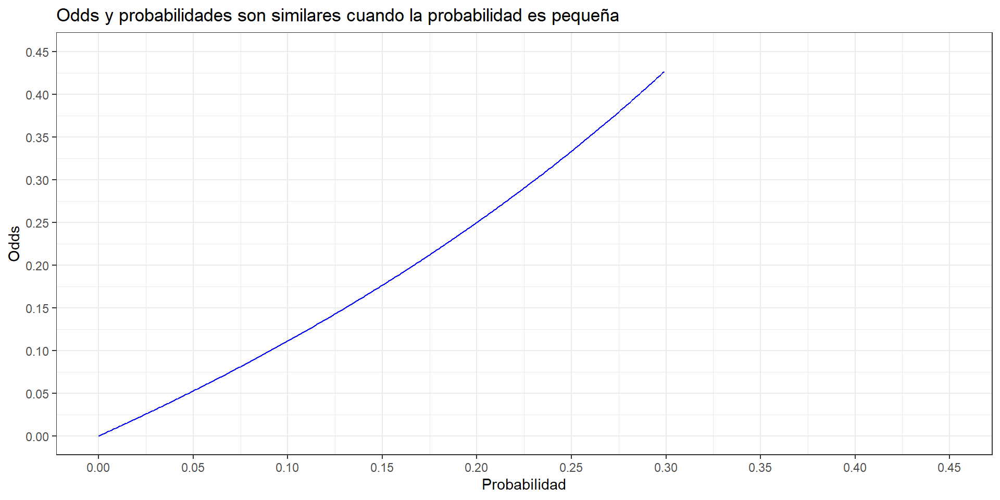
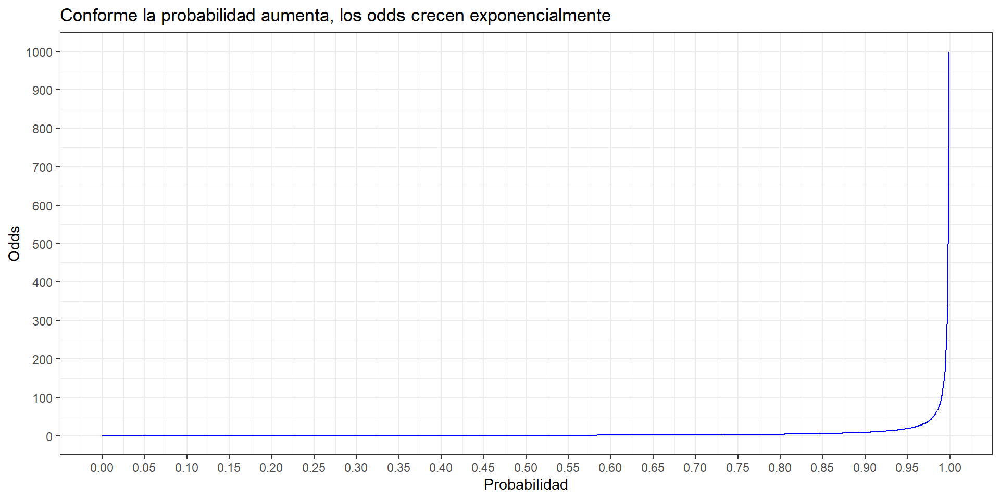
Los odds no se usan mucho en epidemiología para expresar frecuencias; pero una medida derivada de esta sí se usa mucho para expresar asociación: la razón de odds (OR).
En epidemiología, las proporciones o probabilidades puede ser incidencias acumuladas o prevalencias, por lo que tenemos dos tipos de Odds:
\[Odds_{Prevalente} = \frac{Prevalencia}{1 - Prevalencia}\]
\[Odds_{Incidente} = \frac{\text{Incidencia Acumulada}}{1 - \text{Incidencia Acumulada}}\]
Medidas de resumen de variables categóricas con R
Agenda
Medidas de resumen para variables numéricas
Análisis descriptivo de variables categóricas
Medidas de resumen de variables categóricas con R
Tablas Reproducible
tbl_summary() paso a paso
Análisis con R
Hay varias opciones en R.
Las más personalizables se basan en {dplyr} y {janitor} (funciones summarise()), pero requieren más código.
Usar estas si se necesitan elaborar tablas ad hoc para reportes repropducibles muy sui generis.
También son necesarias para gráficos en {ggplot2}
Las opciones que requieren poco código y son directas tienen el problema de que no son personalizables:
{summarytools}
{DescTools}
Usar estas si solo se requiere inspeccionar los datos pero no se hará ningún reporte reproducibl sui generis.
La función table() y prop.table()es la más usada. Sin embargo, genera tablas “sucias” que requieren mucho código para personalizarse.
- Tabla de frecuencias absolutas
- Tabla de frecuencias relativas
- Tabla de frecuencias incluyendo los datos faltantes
Podemos combinar la funcion group_by() con summarise() para generar una tabla de frecuencias de la variable de interés. Podemos también tomar un atajo con count
- Frecuencias absolutas: Forma larga
# A tibble: 3 × 2
sexo n
<fct> <int>
1 Femenino 189
2 Masculino 95
3 <NA> 1- Frecuencias absolutas + relativas: Forma larga
- Frecuencias absolutas: Atajo con count()
# A tibble: 3 × 2
sexo n
<fct> <int>
1 Femenino 189
2 Masculino 95
3 <NA> 1- Frecuencias absolutas + relativas: Atajo con count()
El paquete {janitor}, a través de su función [tabyl(){.verde-h3}], ofrece atajos y funciones pre-definidas para realizar tablas basadas en funciones de {dplyr}.
- {janitor} ejecuta internamente summarise(), group_by() y otras funciones más, simplificando notoriamente el código.
- Hay que instalar el paquete {janitor} y luego cargarlo
Tabla simple generada por tabyl()
sexo n percent valid_percent
Femenino 189 0.663157895 0.665493
Masculino 95 0.333333333 0.334507
<NA> 1 0.003508772 NAPuedes “adornar” la tabla usando más funciones de {janitor}
Cambiar formato de porcentaje a %
- Puedes suprimir los datos perdidos
sexo n percent
Femenino 189 0.665493
Masculino 95 0.334507Agregar totales
sexo n percent
Femenino 189 66.5%
Masculino 95 33.5%
Total 284 -Configurar precisión decimal
Si queremos una evaluación rápida de varias variables puede ser obtenida usando la función freq() del paquete {summarytools}
- Una sola variable:
Frequencies
bd_inmuno$sexo
Label: genero
Type: Factor
Freq % Valid % Valid Cum. % Total % Total Cum.
--------------- ------ --------- -------------- --------- --------------
Femenino 189 66.55 66.55 66.32 66.32
Masculino 95 33.45 100.00 33.33 99.65
<NA> 1 0.35 100.00
Total 285 100.00 100.00 100.00 100.00- Solo las seleccioandas
Frequencies
bd_inmuno$sexo
Label: genero
Type: Factor
Freq % Valid % Valid Cum. % Total % Total Cum.
--------------- ------ --------- -------------- --------- --------------
Femenino 189 66.55 66.55 66.32 66.32
Masculino 95 33.45 100.00 33.33 99.65
<NA> 1 0.35 100.00
Total 285 100.00 100.00 100.00 100.00
bd_inmuno$comorb
Label: comorbilidad
Type: Factor
Freq % Valid % Valid Cum. % Total % Total Cum.
----------- ------ --------- -------------- --------- --------------
No 214 75.09 75.09 75.09 75.09
Sí 71 24.91 100.00 24.91 100.00
<NA> 0 0.00 100.00
Total 285 100.00 100.00 100.00 100.00- Todas las variables categóricas
Frequencies
bd_inmuno$sexo
Label: genero
Type: Factor
Freq % Valid % Valid Cum. % Total % Total Cum.
--------------- ------ --------- -------------- --------- --------------
Femenino 189 66.55 66.55 66.32 66.32
Masculino 95 33.45 100.00 33.33 99.65
<NA> 1 0.35 100.00
Total 285 100.00 100.00 100.00 100.00
bd_inmuno$comorb
Label: comorbilidad
Type: Factor
Freq % Valid % Valid Cum. % Total % Total Cum.
----------- ------ --------- -------------- --------- --------------
No 214 75.09 75.09 75.09 75.09
Sí 71 24.91 100.00 24.91 100.00
<NA> 0 0.00 100.00
Total 285 100.00 100.00 100.00 100.00
bd_inmuno$tipo_refuerzo
Label: tipo_refuerzo
Type: Character
Freq % Valid % Valid Cum. % Total % Total Cum.
-------------------- ------ --------- -------------- --------- --------------
(Empty string) 1 0.35 0.35 0.35 0.35
Heterologo 228 80.00 80.35 80.00 80.35
Homologo 56 19.65 100.00 19.65 100.00
<NA> 0 0.00 100.00
Total 285 100.00 100.00 100.00 100.00
bd_inmuno$ant_COV
Label: ant_COV
Type: Factor
Freq % Valid % Valid Cum. % Total % Total Cum.
--------------------- ------ --------- -------------- --------- --------------
No Infection 201 70.53 70.53 70.53 70.53
Prior Infection 84 29.47 100.00 29.47 100.00
<NA> 0 0.00 100.00
Total 285 100.00 100.00 100.00 100.00- Eliminando los datos perdidos y otras caracteristicas:
bd_inmuno$sexo
Freq %
--------------- ------ -------
Femenino 189 66.55
Masculino 95 33.45
bd_inmuno$comorb
Freq %
-------- ------ -------
No 214 75.09
Sí 71 24.91
bd_inmuno$tipo_refuerzo
Freq %
-------------------- ------ -------
(Empty string) 1 0.35
Heterologo 228 80.00
Homologo 56 19.65
bd_inmuno$ant_COV
Freq %
--------------------- ------ -------
No Infection 201 70.53
Prior Infection 84 29.47Más información sobre el análisis de variables categóricas con…
Tablas para epi: https://epirhandbook.com/en/descriptive-tables.html
{dplyr}: https://dplyr.tidyverse.org/reference/group_by.html
{janitor}: http://sfirke.github.io/janitor/articles/tabyls.html
{summarytools}: https://htmlpreview.github.io/?https://github.com/dcomtois/summarytools/blob/master/doc/introduction.html
Análisis descriptivo de variable categórica - recomendaciones
Se estila reportar los resultados como números en tablas.
En el texto, se puede resaltar los resultados de una o más variables de interés.
Un ejemplo de esto sería:
bd_inmuno %>%
select(sexo, ant_COV) %>%
freq(report.nas = FALSE,
totals = FALSE,
cumul = FALSE,
headings= FALSE)bd_inmuno$sexo
Freq %
--------------- ------ -------
Femenino 189 66.55
Masculino 95 33.45
bd_inmuno$ant_COV
Freq %
--------------------- ------ -------
No Infection 201 70.53
Prior Infection 84 29.47- Interpretación tentativa para sexo:
“El 66.6% de los participantes fueron mujeres. (…)”
- Algunos sugieren agregar la información de las frecuencias absolutas:
“El 66.6% (189 / 284) de los participantes fueron
mujeres. (…)“
- Para el caso de eventos de salud, se estila usar los términos
prevalenciaoincidencia acumuladasi el diseño lo permite. Por tanto, una interpretación tentativa para antecedente de infección por COVID-19:
“La prevalencia de antecedente de infección previa por
COVID-19 fue de 29.47% (84 / 285). (…)“
Tablas Reproducible
Agenda
Medidas de resumen para variables numéricas
Análisis descriptivo de variables categóricas
Medidas de resumen de variables categóricas con R
Tablas Reproducible
tbl_summary() paso a paso
¿Cómo hacer que un análisis de datos sea reproducible?
No cree la tabla “manualmente”.
Genere las tablas con código:
- Es reproducible.
- Menos propenso a error de digitación o lapsus calamis.
- Han habido retracciones de ensayos clínicos por errores de tipeo!!
- Es más rápido, ahorrarás tiempo!!
A la tabla descriptiva menudo se la conoce como tablas tipo 1.
- Puede haber más de una, no hay reglas, solo buenos o malos criterios para presentar resultados.
Hay muchos paquetes: {flextable}, {gt},{huxtable}, {kableExtra}, {kable}, etc.
Sugerimos {gtsummary} para comenzar:
Tabla decriptiva reproducible con {gtsummary}
Permite crear tablas en formato de revistas biomédicas.
Función tbl_summary() para tablas descriptivas univariadas y comparativas (bivariadas)

Los datos que usaremos
- Usaremos los datos simulados de un ensayo clínico para evaluar la seguridad de un suplemento en outcomes clinico y fisiologicos de mujeres con menopausia:
| id | time | treat | treated | age | race | married2 | procedence | weight | height | e2 |
|---|---|---|---|---|---|---|---|---|---|---|
| 1 | Baseline | Placebo | 0 | 33 | Mestiza | Without couple | Callao | 59.0 | 1.4 | 87.30 |
| 1 | 3 months | Placebo | 0 | 32 | Mestiza | Without couple | Callao | 59.9 | 1.3 | 210.05 |
| 2 | Baseline | Dosis 2 | 1 | 27 | Mestiza | Without couple | Santa Anita | 62.0 | 1.5 | 169.01 |
| 2 | 3 months | Dosis 2 | 1 | 27 | Mestiza | Without couple | Santa Anita | 62.1 | 1.6 | 99.91 |
| 3 | Baseline | Dosis 1 | 1 | 25 | Mestiza | Without couple | Callao | 62.0 | 1.6 | 78.76 |
| 3 | 3 months | Dosis 1 | 1 | 25 | Mestiza | Without couple | Callao | 60.0 | 1.6 | 155.04 |
- Las etiquetas de cada variable son:
| Variable | Label |
|---|---|
| id | ID participant |
| time | Time's measurement |
| treat | Treatment's group |
| treated | Treated |
| age | Age, years |
| race | Race |
| married2 | Marital status, recat |
| procedence | Distrit of procedence |
| weight | Weight, kg |
| height | Height, m |
| e2 | Estradiol |
tbl_summary() paso a paso
Agenda
Medidas de resumen para variables numéricas
Análisis descriptivo de variables categóricas
Medidas de resumen de variables categóricas con R
Tablas Reproducible
tbl_summary() paso a paso
tbl_summary() básico
- Seleccionar las variables que desea reportar con función select(), luego usar tbl_summary():
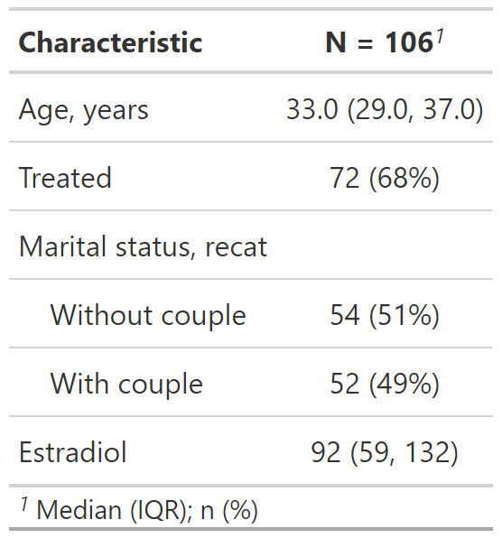
Cuarto tipo de resumenes: continuous, continuos2, categorical y dichotomous
Por defecto, los estadísticos son reportadas como mediana (percentil 25, percentil 75) para variables numéricas y n (%) para variables categóricas/dicotómicas.
Las variables codificadas como 0 / 1, TRUE / FALSE o Yes / No son tratadas como dicotómicas.
Los valores NA se listan como “Unknown
Los atributos de etiqueta se imprimen por defecto.
Uno puede realizar más personalizaciones a la tabla.
Personalización del resultado de tbl_summary()
Personalización del resultado de tbl_summary()
Personalización del resultado de tbl_summary()
Personalización del resultado de tbl_summary()
datos %>%
select(age, treated, married2, height, e2) %>%
tbl_summary(
type = list(height ~ "continuous"),
statistic = list(
c(age, height) ~ "{mean} ({sd})",
c(married2, treated) ~ "{n} / {N} ({p}%)"
)
)type: Especifica el tipo de variable para el resumen.
statistic: Personaliza los estadísticos reportados.
- Usar c() para varias variables.
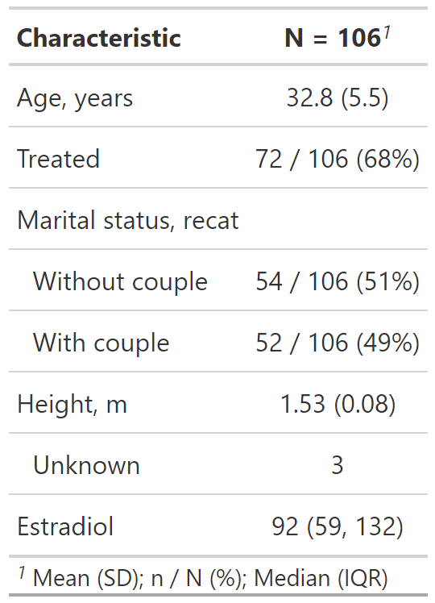
Personalización del resultado de tbl_summary()
datos %>%
select(age, treated, married2, height, e2) %>%
tbl_summary(
type = list(c(age, height) ~ "continuous2"),
statistic = list(
c(age, height) ~ c("{mean} ({sd})",
"{median} ({p25} - {p75})"),
c(married2, treated) ~ "{n} / {N} ({p}%)"
)
)type: Especifica el tipo de variable para el resumen.
statistic: Personaliza los estadísticos reportados.
Usar c() para varias variables.
Si queremos reportar más estadísticos en variables numéricas usamos continuous2

Personalización del resultado de tbl_summary()
datos %>%
select(age, treated, married2, height, e2) %>%
tbl_summary(
type = list(c(age, height) ~ "continuous2"),
statistic = list(
c(age, height) ~ c("{mean} ({sd})",
"{median} ({p25} - {p75})",
"{min} - {max}"),
c(married2, treated) ~ "{n} / {N} ({p}%)"
)
)type: Especifica el tipo de variable para el resumen.
statistic: Personaliza los estadísticos reportados.
Usar c() para varias variables.
Si queremos reportar más estadísticos en variables numéricas usamos continuous2
- Podemos ponerle cuantos estadísticos queramos.
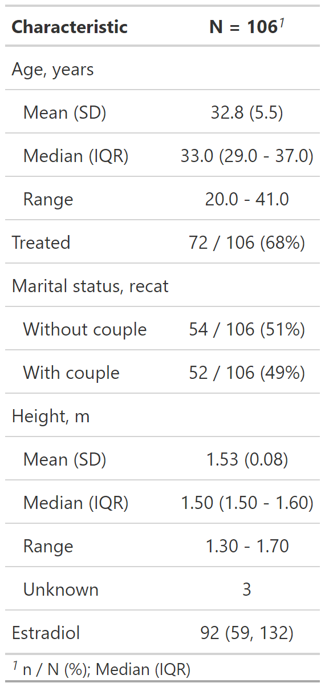
Personalización del resultado de tbl_summary()
datos %>%
select(age, treated, married2, height, e2) %>%
tbl_summary(
type = list(c(age, height) ~ "continuous2"),
statistic = list(
c(age, height) ~ c("{mean} ({sd})", "{min} - {max}"),
c(e2) ~ c("{median} ({p25} - {p75})",
"{min} - {max}"),
c(married2, treated) ~ "{n} / {N} ({p}%)"
)
) type: Especifica el tipo de variable para el resumen.
statistic: Personaliza los estadísticos reportados.
Usar c() para varias variables.
Si queremos reportar más estadísticos en variables numéricas usamos continuous2
Podemos ponerle cuantos estadísticos queramos.
Podemos tener diferentes combinaciones de estadísticos.
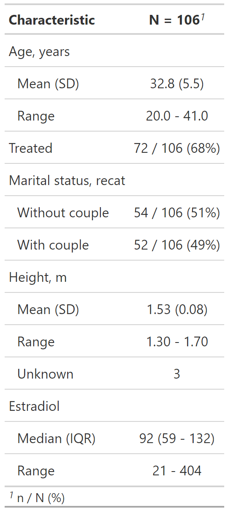
Personalización del resultado de tbl_summary()
datos %>%
select(age, treated, married2, height, e2) %>%
tbl_summary(
type = list(c(age, height, e2) ~ "continuous2"),
statistic = list(
c(age, height) ~ c("{mean} ({sd})", "{min} - {max}"),
c(e2) ~ c("{median} ({p25} - {p75})",
"{min} - {max}"),
c(married2, treated) ~ "{n} / {N} ({p}%)"
),
label = list(
treated ~ "Treated with supplement", e2 ~ "Estradiol, UI",
married2 ~ "Marital status"
)
)type: Especifica el tipo de variable para el resumen.
statistic: Personaliza los estadísticos reportados.
label: Cambia o personaliza la etiqueta de la variable.
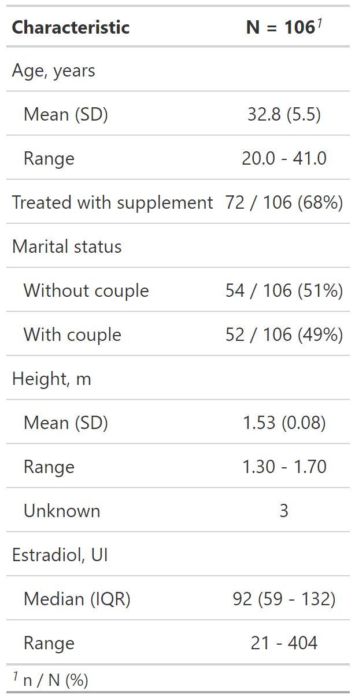
Personalización del resultado de tbl_summary()
datos %>%
select(age, treated, married2, height, e2) %>%
tbl_summary(
type = list(c(age, height, e2) ~ "continuous2"),
statistic = list(
c(age, height) ~ c("{mean} ({sd})", "{min} - {max}"),
c(e2) ~ c("{median} ({p25} - {p75})",
"{min} - {max}"),
c(married2, treated) ~ "{n} / {N} ({p}%)"
),
label = list(
treated ~ "Treated with supplement", e2 ~ "Estradiol, UI",
married2 ~ "Marital status"
),
digits = list(
c(age) ~ 1, c(height, e2) ~ 2, c(married2, treated) ~ 1
)
)type: Especifica el tipo de variable para el resumen.
statistic: Personaliza los estadísticos reportados.
label: Cambia o personaliza la etiqueta de la variable.
digit: Especifica el número de decimales de redondeo.
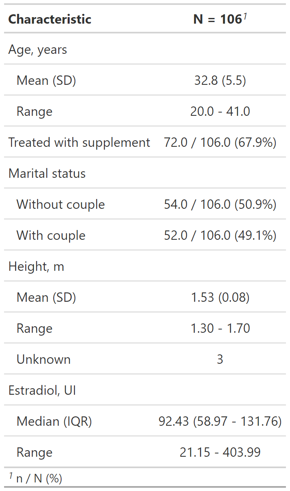
Reporte de datos perdidos con tbl_summary()
datos %>%
select(age, treated, married2, height, e2) %>%
tbl_summary(
type = list(c(age, height, e2) ~ "continuous2"),
statistic = list(
c(age, height) ~ c("{mean} ({sd})", "{min} - {max}"),
c(e2) ~ c("{median} ({p25} - {p75})", "{min} - {max}"),
c(married2, treated) ~ "{n} / {N} ({p}%)"
),
label = list(
treated ~ "Treated with supplement", e2 ~ "Estradiol, UI",
married2 ~ "Marital status"
),
digits = list(
c(age) ~ 1, c(height, e2) ~ 2, c(married2, treated) ~ 1
),
missing_text = "Missing data"
) - misisng_text: Permite editar la etiqueta de missing (Unknown por defecto).
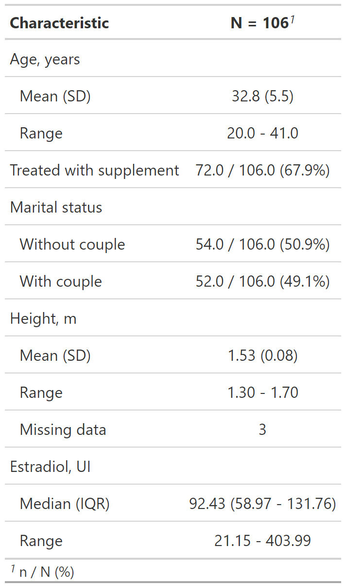
Reporte de datos perdidos con tbl_summary()
datos %>%
select(age, treated, married2, height, e2) %>%
tbl_summary(
type = list(c(age, height, e2) ~ "continuous2"),
statistic = list(
c(age, height) ~ c("{mean} ({sd})", "{min} - {max}"),
c(e2) ~ c("{median} ({p25} - {p75})", "{min} - {max}"),
c(married2, treated) ~ "{n} / {N} ({p}%)"
),
label = list(
treated ~ "Treated with supplement", e2 ~ "Estradiol, UI",
married2 ~ "Marital status"
),
digits = list(
c(age) ~ 1, c(height, e2) ~ 2, c(married2, treated) ~ 1
),
missing = "always", missing_text = "Missing data"
) misisng_text: Permite editar la etiqueta de missing (Unknown por defecto).
missing: Por defecto se presentan los datos perdidos solo si la variable los tiene “ifany”.
- missing = “always” siempre presenta datos perdidos.
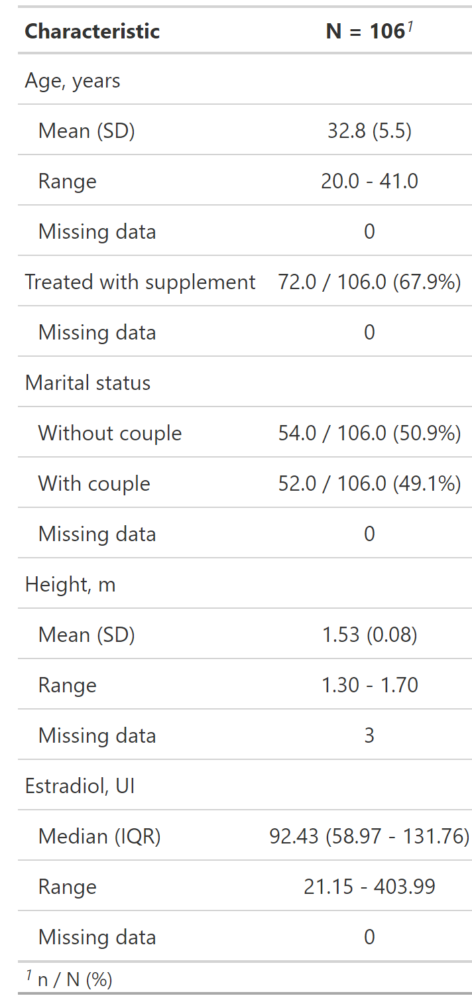
Reporte de datos perdidos con tbl_summary()
datos %>%
select(age, treated, married2, height, e2) %>%
tbl_summary(
type = list(c(age, height, e2) ~ "continuous2"),
statistic = list(
c(age, height) ~ c("{mean} ({sd})", "{min} - {max}"),
c(e2) ~ c("{median} ({p25} - {p75})", "{min} - {max}"),
c(married2, treated) ~ "{n} / {N} ({p}%)"
),
label = list(
treated ~ "Treated with supplement", e2 ~ "Estradiol, UI",
married2 ~ "Marital status"
),
digits = list(
c(age) ~ 1, c(height, e2) ~ 2, c(married2, treated) ~ 1
),
missing = "no"
) misisng_text: Permite editar la etiqueta de missing (Unknown por defecto).
missing: Por defecto se presentan los datos perdidos solo si la variable los tiene “ifany”.
- missing = “always” siempre presenta datos perdidos, así la variable no los tenga.
- missing = “no” nunca presenta datos perdidos, así la variable los tenga.
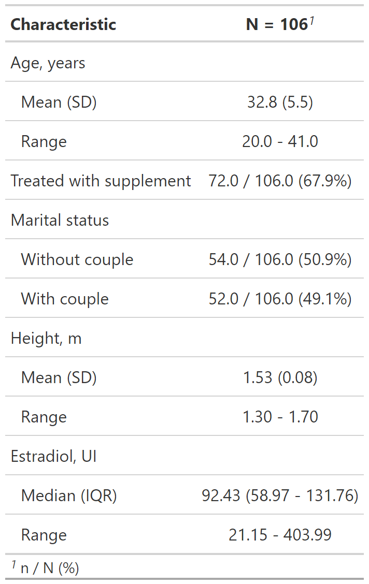
En resumen: {gtsummary} + fórmulas

Personzalización con bold_() / italicize_()
Personzalización con bold_() / italicize_()
- bold_labels(): negrita a las etiquetas de las variables

Personzalización con bold_*() / italicize_*()
bold_labels(): negrita a las etiquetas de las variables
italicize_levels(): cursiva a los niveles (valores) de las variables
Guardar tabla como documento MS Word
Se puede descargar la tabla en formato MS. Word para reporte reproducible.
Primero se guarda como un objeto de R:
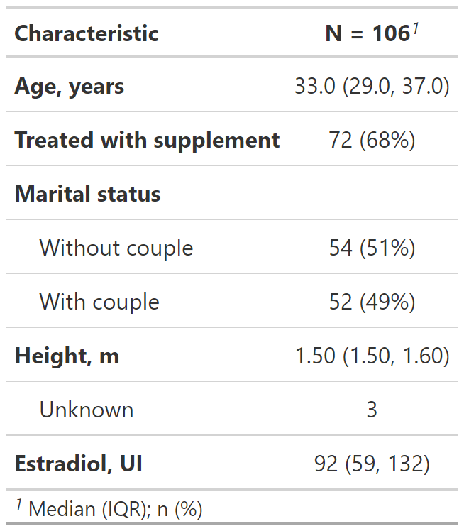
Guardar tabla como documento MS Word
Se puede descargar la tabla en formato MS. Word para reporte reproducible.
Primero se guarda como un objeto de R:
- Luego, al objeto se lo guarda como un archivo de MS Word.
Guardar tabla como documento MS Word
Se puede descargar la tabla en formato MS. Word para reporte reproducible.
Primero se guarda como un objeto de R:
- Luego, al objeto se lo guarda como un archivo de MS Word.
Guardar tabla como documento MS Word
Se puede descargar la tabla en formato MS. Word para reporte reproducible.
Primero se guarda como un objeto de R:
- Luego, al objeto se lo guarda como un archivo de MS Word.
Guardar tabla como documento MS Word
Se puede descargar la tabla en formato MS. Word para reporte reproducible.
Primero se guarda como un objeto de R:
- Luego, al objeto se lo guarda como un archivo de MS Word:
Guardar tabla como documento MS Word (cont.)
- El MS Word aparecerá en la carpeta del proyecto:
Guardar tabla como documento MS Word (cont.)
- Y la tabla en Word lucirá así:
Guardar tabla como documento MS Excel
Nuestro turno
Descargue la carpeta denominada taller05 disponible en la carpeta compartida.
Abra el proyecto denominado taller05.Rproj
Complete y ejecute el código faltante en los chunk de código de la SEGUNDA PARTE.
Una vez culmine todo el proceso, renderice el archivo .qmd.
@psotob91
https://github.com/psotob91
percys1991@gmail.comR Aplicado a los Proyectos de Investigación - Sesión 5